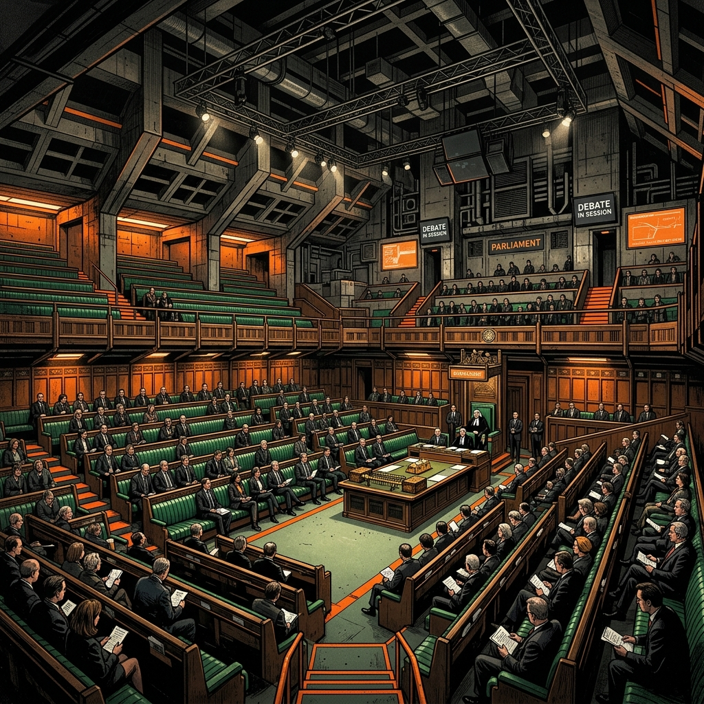

The house where government is formed and local electorates are represented.

The House of Representatives is one of the two houses of the federal Parliament. It is often called the "Lower House" and its members are elected by the Australian people.
Each member of the House represents a specific geographic area known as an electorate or community. This means that every Australian has a local member who speaks for their interests in Parliament.
CHOSEN BY: The voters
REPRESENTS: Electorates
ROLE: Make laws
The House of Representatives has a very special role: it is where the Australian Government is formed.
After an election, the political party (or coalition of parties) that wins the majority of seats (more than half) in the House of Representatives becomes the government. Their leader becomes the Prime Minister.
In the House, members debate national issues, propose new laws (bills), and vote on whether those bills should be passed.